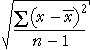

Distances from the centre of the distribution
The root mean squared error summarises the distances of data values from a target constant, k.
root mean squared error =
The population standard deviation is a similar summary statistic that summarises the distances of the values from the centre of their distribution.
population standard deviation = 
| The standard deviation summarises the spread of values in the data. |
Sample standard deviation
The sample standard deviation is more often encountered. The only difference is that the sum of the squared deviations is divided by (n - 1) rather than n.
| sample standard deviation = s =  |
When you read of a standard deviation in a report, it is likely to be the sample standard deviation that is intended.
| In CAST, the term 'standard deviation' always refers to the sample standard deviation. |
There is little practical difference between the population and sample standard deviation provided the sample size is reasonably large. Even when the sample size is small, both definitions should lead you to the same conclusions about your data. (Otherwise, you are probably over-interpreting your data!)
Illustration of standard deviation
The diagram below shows 7 values and represents their squared deviations (distances from the mean) by squares.
The red square has area equal to the average area of the blue squares.
| The population standard deviation is the side length of this red square. |
Select Sample standard deviation from the pop-up menu. The sample standard deviation uses (n - 1) = 6 instead of n = 7 in the denominatory of formula for the standard deviation so it is slightly larger. In larger data sets, the difference is smaller.
Drag the crosses to see how the standard deviation relates to the data values. (Note that the mean also changes when a value is dragged.)
If you drag the lowest cross to turn it into an outlier, you may notice that it has a disproportionately large influence on the standard deviation.
| The standard deviation is strongly affected by outliers, so it is not a robust summary of spread. |